퍼지 군집화(FUZZY CLUSTERING)
Identifying the number of sub-classes of "c" clusters in a data universe X comprised
of n data samples, and partitioning X into c clusters.
• how to measure the similarity
• how to evaluate the partition once they are formed
Mathematical Representation:
X= {x1, x2, x3, ….xn} n: number of samples
xi= (fi1, fi2, ……..fim) m: number of features
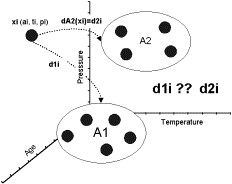
figure 1: the problem of clustering
Hard C-Means: introductory conditions
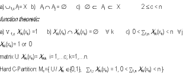
• How can we select U?
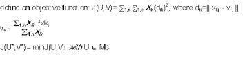
Hard C-Means Algorithm:
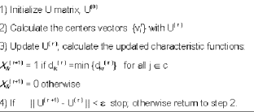
Fuzzy C-Means: introductory conditions
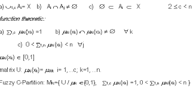
• Selection of U?
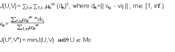
Fuzzy C-Means Algorithm (Bezdek, 1981):
 Graphic Example of the Fuzzy-C Means Algorithm
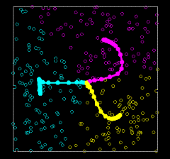
figure 2 : Fuzzy C-Means Clustering, c=3
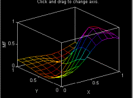
figure 3: membership function of a cluster see also figure 4
Classification Metric
How fuzzy is the fuzzy partition?
Fuzzy partition coefficient:FC(U)=tr(U*Ut)/n
Defuzzification of the Fuzzy Partition U
Max-Membership Method
Nearest Center Classifier
Similarity Relations from Clustering
clustering U similarity relation:
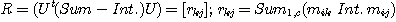
Fuzzy Clusters and Fuzzy Rules
fuzzy rules: consequences of the projection over the "fiZ"(e.g., YZ) axes of the membership
functions of a cluster. (fi: feature I of the vector x)
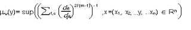
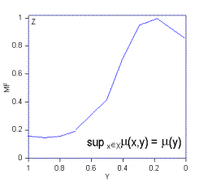
figure 4: projection of the cluster membership function over the YZ (see figure 3 )
Graphic Example of the Fuzzy-C Means Algorithm
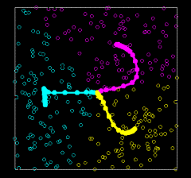
figure 2 : Fuzzy C-Means Clustering, c=3
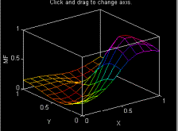
figure 3: membership function of a cluster see also figure 4
Classification Metric
How fuzzy is the fuzzy partition?
Fuzzy partition coefficient:FC(U)=tr(U*Ut)/n
Defuzzification of the Fuzzy Partition U
Max-Membership Method
Nearest Center Classifier
Similarity Relations from Clustering
clustering U similarity relation:
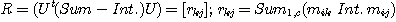
Fuzzy Clusters and Fuzzy Rules
fuzzy rules: consequences of the projection over the "fiZ"(e.g., YZ) axes of the membership
functions of a cluster. (fi: feature I of the vector x)
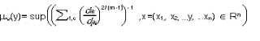
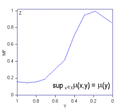
figure 4: projection of the cluster membership function over the YZ (see figure 3 )